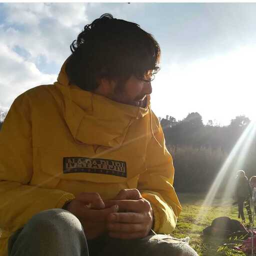

Marina
Background in customer care and learning — now focused on building guides and sessions that stick.
Fun fact: she taught herself Korean.
The Training Den
We’re Marina and Stefano — the training team behind most of what you see in WorkRamp, the roadmap, and the workshops you’ll join along the way. We started where many of you did: on the front line, running the extra mile for customers in the queues.
Background in customer care and learning — now focused on building guides and sessions that stick.
Fun fact: she taught herself Korean.

Same roots in the queues — now helping teams grow through training and content.
Fun fact: he plays guitar.
The majority of the content in the LMS is built and maintained by us. We have a long history of in-house training: we’ve trained a strong Tier 2 team of experts in Berlin, and we keep shaping how Omio learns and upskills.
In 2025 we doubled down on our BPO partner work — making sure training everywhere mirrors Omio standards.
We run workshops and trainings regularly — new topics, refreshers, and anything the business needs to ship with confidence. If it sounds like we’re busy, we are — and we wouldn’t have it any other way.
Questions, ideas, or a session request? Email us — we read everything that lands in the training inbox.
To raise a formal training request (tracked in Jira), use the Omio Employee Service Desk: